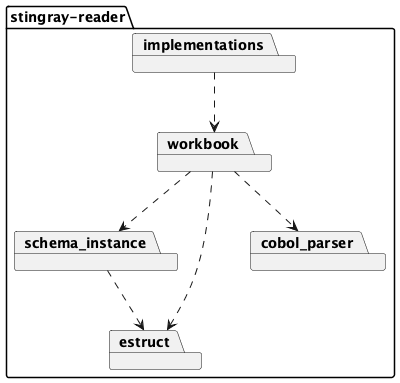
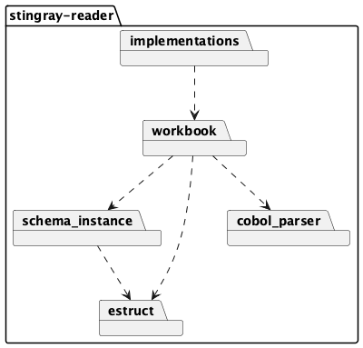

stingray API Reference¶
The overall structure of Stingray Reader is a collection of modules.

We’ll look at each module, separately, working up from the bottom of the diagram.
The overall structure of Stingray Reader is a collection of modules.

We’ll look at each module, separately, working up from the bottom of the diagram.